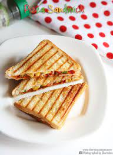

Pizza
Home

Another sandwich your kids will love so much they won't even think twice about putting you in a retirement home. Its the Grilled Pizza sammich!
Ingredients
- 8 Tablespoons unsalted butter
- 1 Tablespoon Extra virgin olive oil
- 1 teaspoon Italian seasoning
- 1/2 teaspoon garlic powder
- 12 slices white bread
- 6 Tablespoons pizza sauce
- 36 pepperoni slices
- 1 1/2 cup shredded mozzarella cheese
Steps
- First, make the garlic butter.
- Then, preheat a 10-inch skillet on the stovetop over medium-low heat.
- Next, prep the sandwiches by brushing one side with garlic butter. Then flip the pieces of bread over and top with pizza sauce and evenly spread it over the bread. Add pepperoni and mozzarella cheese to each.
- Place another piece of bread on top of each sandwich.
- Cook the sandwiches, garlic butter side down, for 2-3 minutes.
- Finally, transfer the grilled cheese to a plate and cut it in half and serve.
Calorites:436